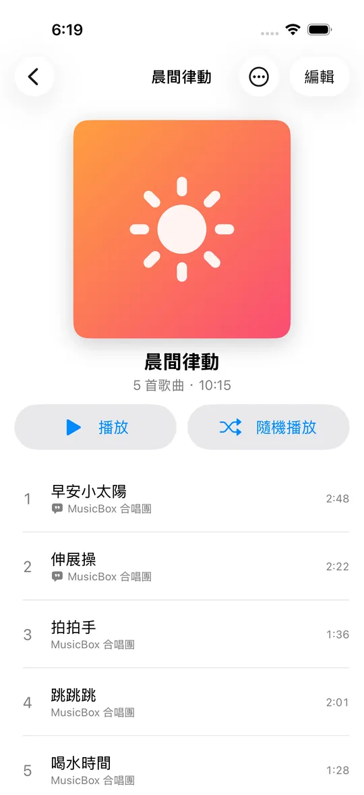
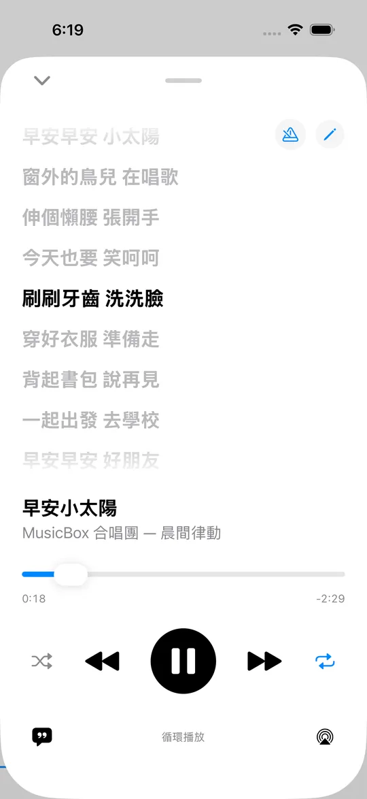
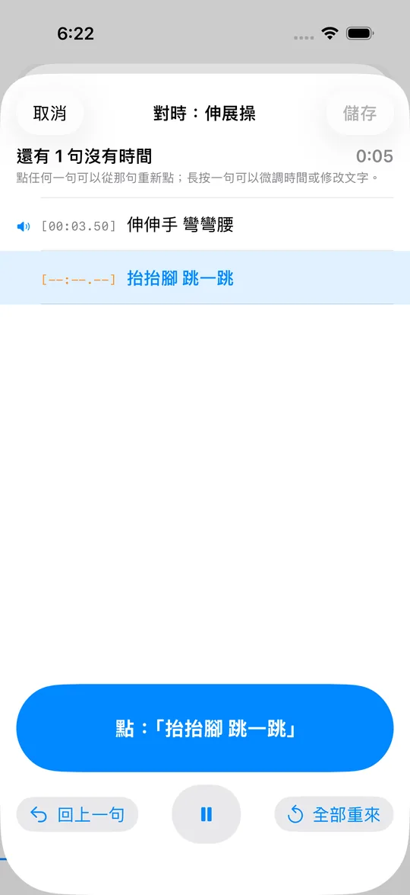
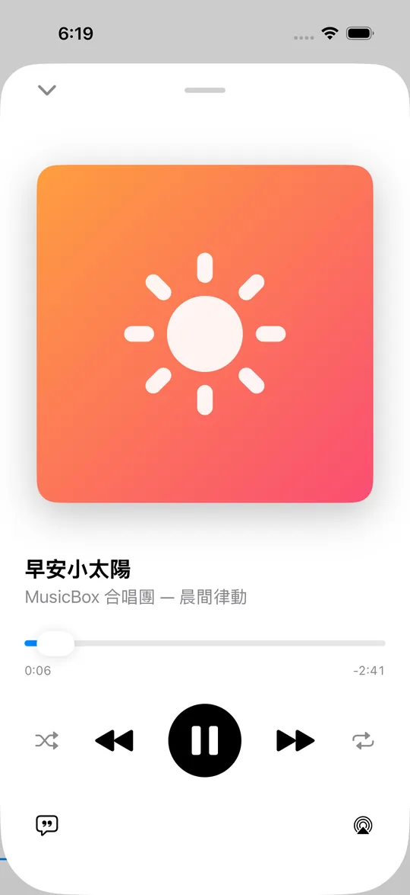
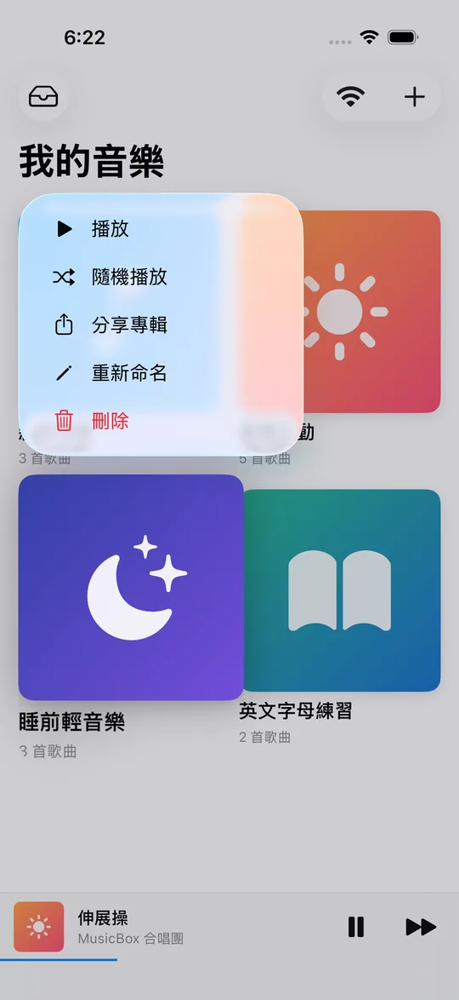
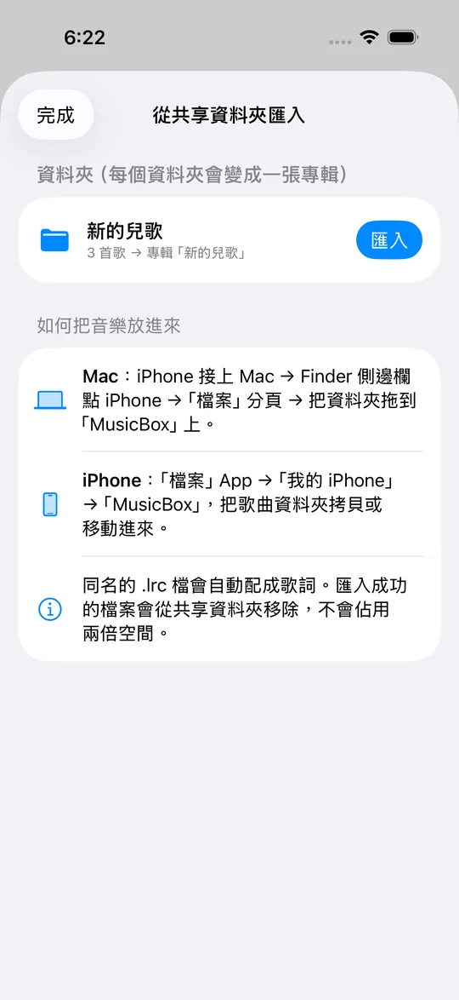
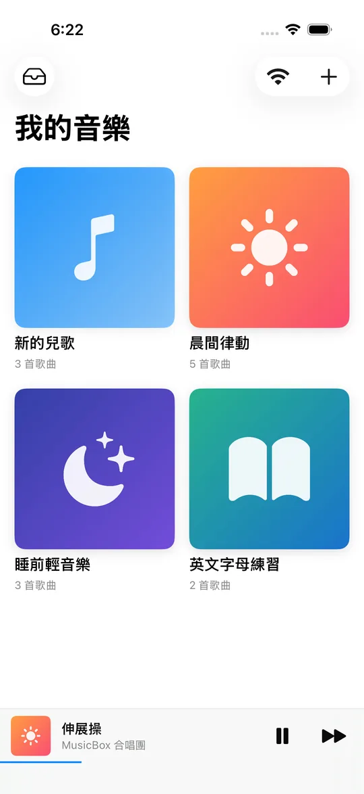
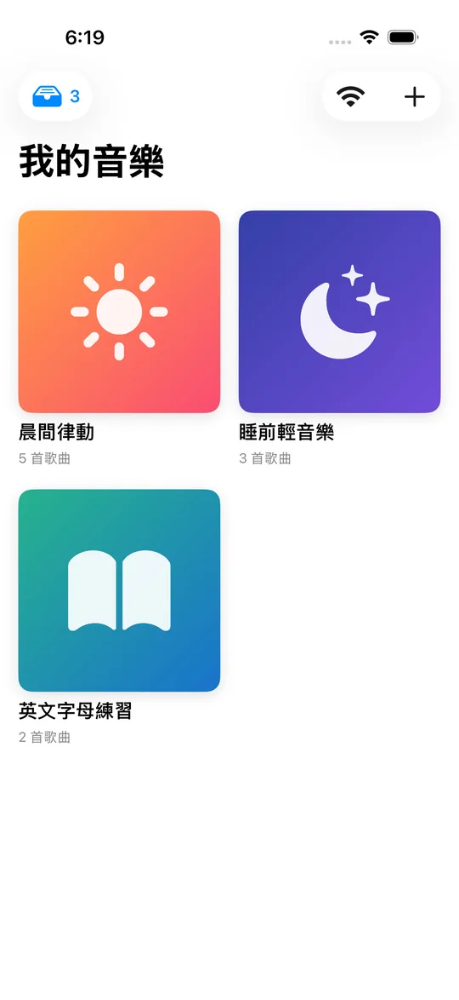
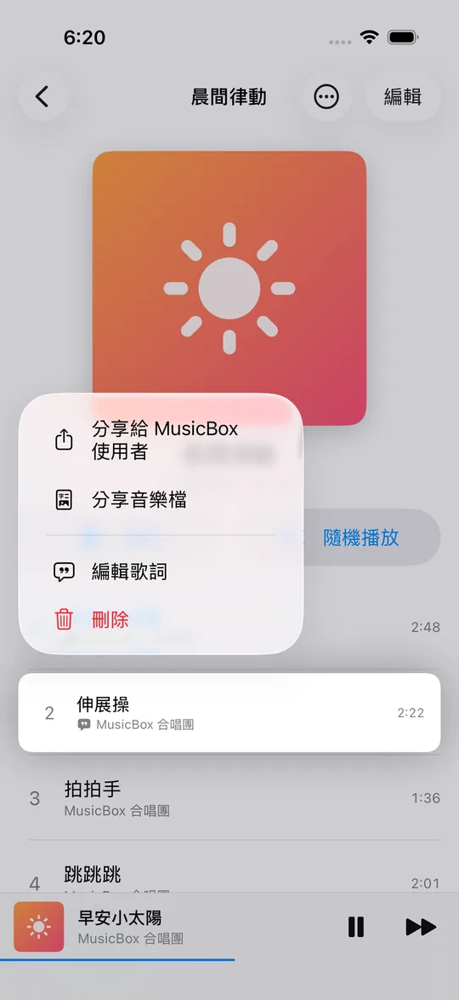
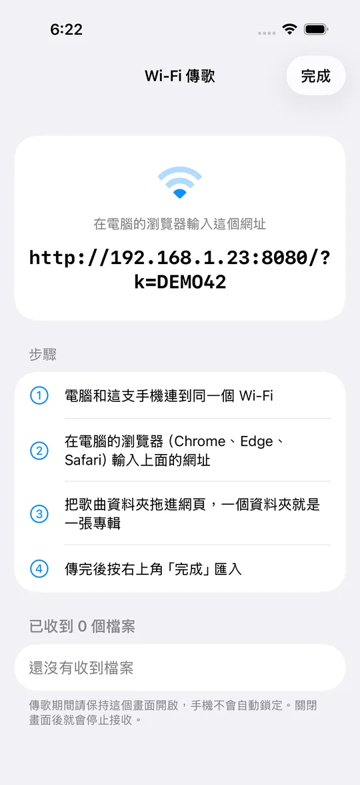

專輯整理
依照課程、心情或孩子的年紀建立專輯，換封面、改名字、拖曳調整曲序都很直覺。

上課的兒歌、睡前的輕音樂、自己收藏的 mp3，通通整理成專輯。歌詞跟著音樂一句一句亮起來，按一下就投放到 HomePod，還能把整張專輯傳給家人。
即將登上 App Store，敬請期待！
App Store 下載點右邊的章節，影片就會跳到那一段。
不用註冊、沒有廣告，音樂只存在你自己的手機裡。
依照課程、心情或孩子的年紀建立專輯，換封面、改名字、拖曳調整曲序都很直覺。

整張循環、單曲一直重複、隨機播放，一個按鈕切換。鎖定螢幕或切到其他 App 也會繼續播。
唱到哪一句就亮到哪一句，點一下某一句就跳過去，陪孩子一起唱最方便。

只有純文字歌詞也沒關係：邊聽歌邊點按鈕，就能做出會捲動的歌詞。點錯了只要重點那一句。

按下播放畫面右下角的 AirPlay，就能把音樂送到 HomePod、Apple TV 或支援 AirPlay 的喇叭。

長按專輯就能用 AirDrop 傳送，連曲序、歌詞和封面一起帶過去；對方沒裝 App，也能只傳 mp3。

用 iPhone、Mac 或 Windows 都可以。同名的 .lrc 歌詞檔會自動配對成歌詞。



掃描 QR Code 或在 App Store 搜尋「Share MusicBox」。
用上面任一種方式把 mp3 放進來，一個資料夾變成一張專輯。
選循環或隨機，打開歌詞一起唱，或投放到 HomePod。



mp3、m4a、aac、wav、aiff、flac、caf。歌詞支援 .lrc（有時間軸、會跟著捲動）與 .txt（純文字）。
純文字歌詞沒有時間資訊，所以只能整頁顯示。打開歌詞編輯器按「點按對時」，邊聽邊點一下，就能變成會捲動的歌詞。
不用重來！在對時畫面點錯的那一句，音樂會自動跳回前一句，從那裡重新點就好；也可以往右滑某一句，用 ±0.1 秒微調。
只有在手機上打開「Wi-Fi 傳歌」畫面時才會接收檔案，關掉就停止。網址裡有一組每次都不同的存取碼，同一個 Wi-Fi 的其他人沒有存取碼就無法上傳；而且只接受音樂與歌詞檔。
不會。所有音樂與歌詞都只存在你的手機裡，App 不需要註冊帳號，也不會蒐集任何個人資料。
可以。長按歌曲選「分享音樂檔」，對方會收到一般的 mp3。若對方也有安裝 Share MusicBox，選「分享給 MusicBox 使用者」可以連歌詞、曲序和封面一起送過去。
請放入你擁有或有權使用的音樂，例如自己購買的 CD 轉檔或自行錄製的音檔。分享給他人前，也請確認符合音樂的授權範圍。